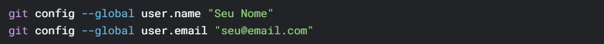

Projeto Integrador I
Professor Responsavel:
Jefferson Antonio Ribeiro Passerini
O projeto Integrador I é uma disciplina na qual os estudantes aprendem a desenvolver sistemas reais para clientes aprendendo a gerir seus projetos com prazos e organização. Durante o curso, os alunos aplicam seus conhecimentos te´ricos em situações práticas, trabalhando em seus projetos que abordam desafios reais enfrentados no mercado. Essa experiência prática proporciona uma visão abrangente dos processo de desenvolvimento de software, permitindo aos alunos aprimorar usas habilidades técnicas e de gestão de projetos, além de proporcionar uma interação valiosa com portenciais usuários e stakeholders.
Git e GitHub
Repositorios e branchs para salvar projetos
No começo desta disciplina aprendemos a como nos organizar a respeito de atualizar projetos e de salvar os mesmos de uma melhor forma atráves do Git, que envia o projeto para o nosso repositorio do GitHub
Principais conceitos do Git
- Controle de versionamento
- Estados dos arquivos no Git
- Comandos basicos
- git init - Inicializa um repositorio Git
- git add - Adiciona arquivos ao staging
- git commit - Salva as alterações no histórico
- git status - Verificar o estado dos arquivos
- git log - Exibe o histórico dos commit
- git diff - Mostra a diferença entre as versões
- GitHub
No Git controlamos e salvamos alterações de um projeto com segurança sem a preocupação de realizar alguma alteração que acabara com o projeto. No git controlamos essas versões do projeto e sabemos com quem ela foi alterada
No Git os arquivos possuem t^res fases que são editadas ao longo do projeto sendo elas: sendo editada, pronto para salvar e salvos no historico, a seguir os comandos que usamos para manipularas:
Git é uma ferramenta que ajuda a controlar as mudanças feitas em arquivos, especialmente em projetos de programação. Ele facilita o trabalho em grupo e evita que um desenvolvedor atrapalhe o trabalho do outro. Ao contrário de outros sistemas, cada pessoa tem uma cópia completa do projeto, o que dá mais segurança e liberdade.
Fluxo de trabalho
- Configuração Inicial 
- Trabalhando com Branchs
- git branch - Lista ou cria branchs
- git checkout ou git switch - muda entre branchs
- git merge - Combina branchs
- git rebase - Reaplica commits em outra branch (alternativa ao merge)
- Colaboração via GitHub
- git clone - Baixa um repositorio remoto
- git push - Envia alterações para o Git
- git pull - Atualiza o repositório local com alterações remotas
Conclusão
Aprendemos que o Git e GitHub são indispensáveis para desenvolvimento moderno, oferecendo controle de versão, colaboração eficiente e histórico de alterações.